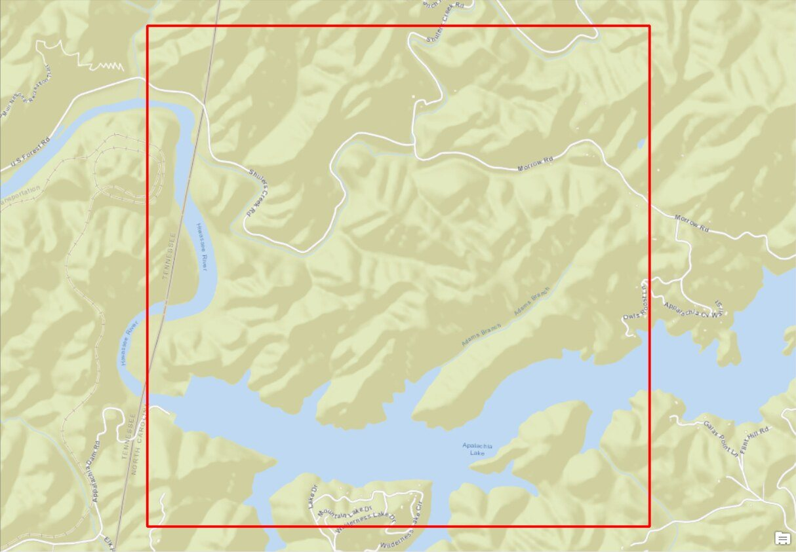
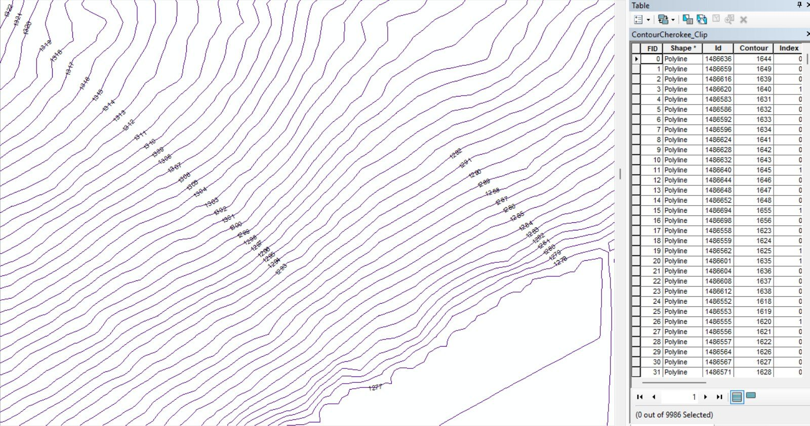

GIS Data Engineering & CADFig. 1 Area of interest (red box) over the Hiwassee River and Apalachia Lake, Cherokee County, NC Fig. 2 Clipped 1-ft contours with elevation labels and the contour attribute table (9,986 features)
1-ft Contours to CAD (DWG + SHP)
Clipped NC OneMap 1-ft contours to a one-mile area of interest and exported them to both shapefile and AutoCAD DWG.
- Location
- Cherokee County, North Carolina, USA
- Year
- 2026
- Client
- MBH Inc., USA (5.0★)
- Tools
- ArcMap / ArcGIS Pro, Export to CAD, NC OneMap




Large files delivered via Google Drive.
Challenge
A fixed-scope, pass/fail task: clip North Carolina 1-ft contours to a one-mile area and deliver working DWG and shapefile versions, or no payment.
Approach
- Downloaded the contour FGDB and built the AOI box from the client's centre point and a one-mile buffer (adjusted to the client's marked area)
- Clipped the contours to the AOI, keeping the elevation (Contour) and index-contour (Index) attributes
- Exported to shapefile and to DWG with Export to CAD
- Checked the labels at large scale, documented the coordinate system (State Plane, US feet) in a text note and confirmed that both files open
Results
- 9,986 contour lines in the clipped area at a 1-ft interval, with every fifth foot flagged as an index contour
- Elevations run from about 1,277 ft near the lake shore to over 1,650 ft on the ridges
- Delivered SHP + DWG + projection note; accepted and paid
- Noted that the dataset covers North Carolina only, so the part of the AOI in Tennessee has no contours
- Client review: “Abdul delivered exactly what we needed with a complex GIS to CAD conversion.”